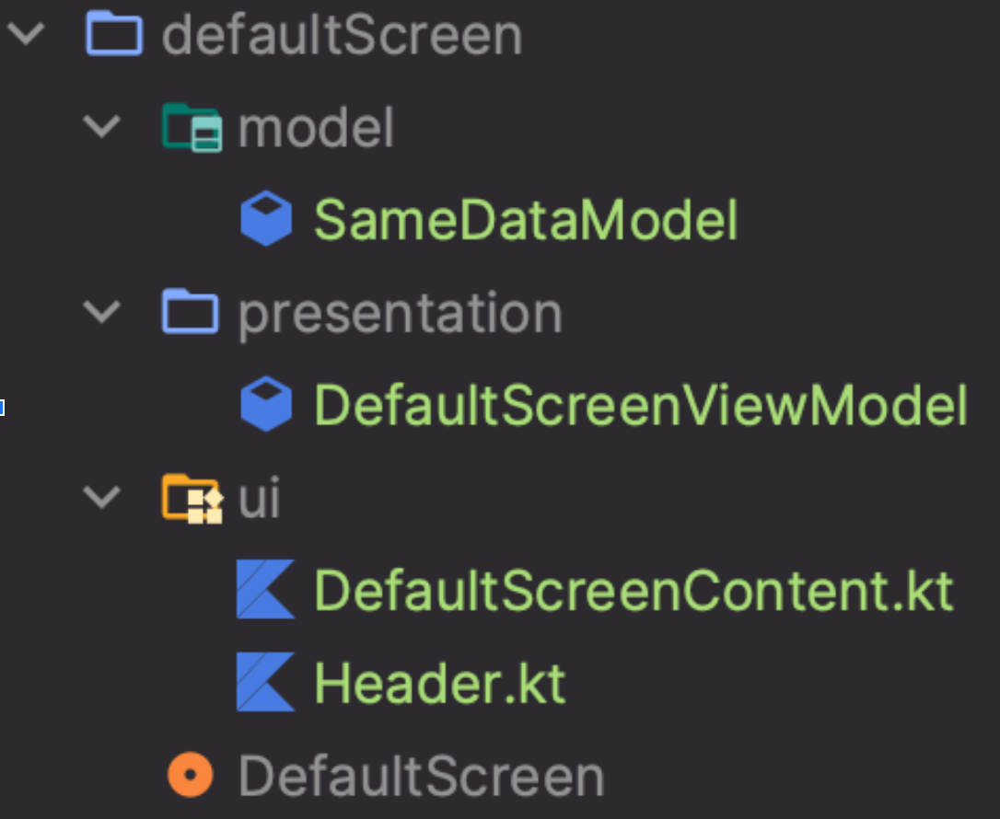

Навигация
Навигация с Jetpack Compose
- Обычный экран
- Экран с обязательным аргументом навигации
- Экран с опциональным аргументом в навигации
- Экран с обязательным и опциональным аргументом в навигации
- Список экранов
- Использование нижнего бара для навигации или экраны внутри хоста
- Структура хранения компонентов экрана
Для построения навигации на наших проектах используется библиотека навигации, которую предоставляет сама Google: navigation-compose. Ниже описано то, к какой оптимизации по организации навигации на стандартном решении Google для Jetpack Compose, мы пришли и используем в своих проектах.
Начнем с базового компонента, в рамках которого живут наши экраны в частности и приложение в целом - RootContainer, в котором находится navHost. Данный контейнер располагается в корне activity, внутри MaterialTheme.
@Composable
fun RootContainer() {
val navController: NavHostController = rememberNavController()
Scaffold(
modifier = Modifier.fillMaxSize(),
contentWindowInsets = WindowInsets(0, 0, 0, 0),
) { padding ->
NavHost(
modifier = Modifier
.fillMaxSize()
.padding(padding)
.consumeWindowInsets(padding)
.windowInsetsPadding(
WindowInsets.safeDrawing.only(
WindowInsetsSides.Horizontal,
),
),
navController = navController,
startDestination = getScreenName<SelectScreen>()
) {
allScreens.forEach { screen ->
composableScreen(screen, navController)
}
}
}
}
private fun NavGraphBuilder.composableScreen(
screen: Screen,
navController: NavHostController,
) {
composable(
route = screen.screenName,
arguments = screen.navArgs
) { backStackEntry ->
screen.Content(
navController = navController,
args = backStackEntry.arguments
)
}
}
В самом контейнере нет ничего особенного, обработка edge-to-edge, настройка NavHost, добавление экранов внутрь графа навигации. Думаю, Вы заметили непонятную сущность Screen, на которой завязан composableScreen, содержащий то, что Google предлагала описать в одном месте. Давайте рассмотрим, что она из себя представляет:
interface Screen {
val screenName: String
val navArgs: List<NamedNavArgument> get() = emptyList()
@Composable
fun Content(navController: NavController, args: Bundle?)
}
Это интерфейс, который содержит базовые поля и функции экрана такие как: имя, аргументы и собственно сам контент экрана (то, к какому решению по организации экрана с Compose в проекте расскажем ниже). Любой экран в нашем решении представляет из себя объект, который реализует этот интерфейс. В Content экрана в качестве параметра указан NavController, который будет использоваться для переходов на другие экраны и возврат на предыдущий по backStack’у, а также Bundle, из которого будем извлекать параметры переданные при навигации.
Такая организация структуры экрана позволяет централизованно создать его в рамках navHost не описывая все параметры в большом списке и порождать “god class”, который знает обо всей навигации в приложении.
В рамках подхода существует два типа функций, которые формируют путь навигации для экрана: defaultScreenName и screenName, разница между ними в том, что первая служит для формирования навигационного графа, а вторая для непосредственного использования для навигации на экран. Каждый тип функции будет рассмотрен в рамках своего кейса.
Давайте вспомним какие типы экранов, в рамках наличия аргументов навигации нам могут потребоваться в приложении:
- Обычный экран, без необходимости аргументов для функционала;
- Экран с аргументом, без которого невозможно отобразить контент;
- Экран с опциональными аргументами, от которых зависит контент экрана, но их отсутствие не влияет на функционал;
- Экран с обязательным и необязательным аргументами.
Обычный экран
Рассмотрим код примера такого экрана:
object DefaultScreen : Screen {
override val screenName: String = defaultScreenName()
@Composable
override fun Content(navController: NavController, args: Bundle?) {
...
}
}
Ничего необычного здесь нет, аргументы для него не требуются, поэтому они остаются такими как определены в интерфейсе Screen. Нужно раскрыть как выглядит defaultScreenName, который отвечает за формирование uri для навигации на экран, представляет он из себя следующую функцию:
fun Screen.defaultScreenName(): String = this::class.java.simpleName
То есть, navigation uri это просто имя класса экрана, в нашем случае будет DefaultScreen. Навигация на такой экран будет выглядеть следующим образом:
...
navController.navigate(
DefaultScreen.screenName
)
...
Как можно увидеть, мы избавились как минимум от одной проблемы - не нужно помнить полный путь навигации на экран, в противном случае получим ошибку в Runtime, что может возникать, когда на один экран можно попасть из нескольких мест приложения.
Экран с обязательным аргументом навигации
В отличие от обычного экрана необходимо реализовать поле navArgs и описать необходимые параметры: имя, тип.
object ScreenWithRequiredParams: Screen {
private const val REQUIRED_PARAM = "REQUIRED_PARAM"
override val navArgs: List<NamedNavArgument> = listOf(
navArgument(REQUIRED_PARAM) {
type = NavType.StringType
}
)
override val screenName: String = defaultScreenNameWithParams(REQUIRED_PARAM)
fun screenName(argument: String) = screenNameWithParams(argument)
@Composable
override fun Content(navController: NavController, args: Bundle?) {
val argument: String = args?.getString(REQUIRED_PARAM) ?: return
...
// Screen content
// init viewModel for example
//
// val viewModel: ScreenViewModel = viewModel {
// createScreenViewModel(argument)
// }
...
}
}
Для удобства вынесем имя параметра в константу, которая доступна только в рамках экрана REQUIRED_PARAM, добавим в navArgs navArgument типа String, доступны примитивы аналогичные тем, которые использовались при навигации для view. Для получения screenName в данном случае используется функция defaultScreenNameWithParams, которая выглядит вот так:
fun Screen.defaultScreenNameWithParams(vararg params: String): String {
return defaultScreenName() + params.joinToString { "/{$it}" }
}
Как можно заметить, итоговая структура uri соответствует тому, что требуется для гугловой библиотеки. Для удобства навигации на экран, предлагаем создать функцию, в которую нужно передать требуемый именованный аргумент, например в данном случае она может выглядеть вот так:
fun screenName(argument: String) = screenNameWithParams(argument)
Вместо screenName можно использовать удобное название, например, с указанием откуда происходит навигация. Навигация в этом случае выглядит так:
...
navController.navigate(
ScreenWithRequiredParams.screenName(argument = "value")
)
...
Если создание функции кажется Вам избыточным, то навигация на экран будет вот такой, но если Вы не укажете все необходимые параметры или укажете меньше, то будет ошибка в Runtime:
...
navController.navigate(
ScreenWithRequiredParams.screenNameWithParams("sameValue")
)
...
Экран с опциональным аргументом в навигации
Так же как и с обязательным, необходимо заполнить navArgs. Основным отличием является необходимость задать для параметра навигации значение по-умолчанию, либо выставить флаг nullable в значение true, что неявно выставит defaultValue = null. О чем сказано здесь.
object ScreenWithOptionalParams : Screen {
private const val OPTIONAL_PARAM = "OPTIONAL_PARAM"
override val navArgs: List<NamedNavArgument> = listOf(
navArgument(OPTIONAL_PARAM) {
type = NavType.StringType
nullable = true
},
)
override val screenName: String = defaultScreenNameWithOptionalParams(
listOf(OPTIONAL_PARAM)
)
fun screenNameWithoutArgument() = screenNameWithOptionalParams(emptyList())
fun screenNameWithArgument(
argument: String,
) = screenNameWithOptionalParams(
listOf(OPTIONAL_PARAM to argument)
)
@Composable
override fun Content(navController: NavController, args: Bundle?) {
val argument: String = args?.getString(OPTIONAL_PARAM) ?: ":OPTIONAL_IS_EMPTY:"
...
// Screen content
// init viewModel for example
//
// val viewModel: ScreenViewModel = viewModel {
// createScreenViewModel(argument)
// }
...
}
}
Для получения uri в данном кейсе используется defaultScreenNameWithOptionalParams, который выглядит вот так:
fun Screen.defaultScreenNameWithOptionalParams(
optionalParams: List<String>
): String {
val optionals = optionalParams.joinToString { "?$it={$it}" }
return defaultScreenName() + optionals
}
Для удобства вызова экрана создадим две функции: с аргументом и без.
fun screenNameWithArgument(
argument: String
): String {
return screenNameWithOptionalParams(listOf(OPTIONAL_PARAM to argument))
}
fun screenNameWithoutArgument() = screenNameWithOptionalParams(emptyList())
Навигация на экран может выглядеть следующим образом.
С аргументом:
...
navController.navigate(
ScreenWithOptionalParams.screenNameWithArgument(
argument = inputFieldValue
)
)
...
Без аргумента:
...
navController.navigate(
ScreenWithOptionalParams.screenNameWithoutArgument()
)
...
Без использования предварительно созданной функции для навигации:
...
navController.navigate(
ScreenWithRequiredParams.screenNameWithOptionalParams("sameValue")
//or
ScreenWithRequiredParams.screenNameWithOptionalParams(emptyList())
)
...
Экран с обязательным и опциональным аргументом в навигации
Наименее часто встречающийся тип экранов, которых может быть всего один или два в приложении, но не менее важный. Отличие от описанных выше типов экрана небольшое: стоит сохранять структуру обязательные параметры, потом необязательные в uri экрана. Давайте рассмотрим содержимое экрана с двумя типами аргументов.
object ScreenWithParams : Screen {
private const val REQUIRED_PARAM = "REQUIRED_PARAM"
private const val OPTIONAL_PARAM = "OPTIONAL_PARAM"
override val navArgs: List<NamedNavArgument> = listOf(
navArgument(REQUIRED_PARAM) {
type = NavType.StringType
},
navArgument(OPTIONAL_PARAM) {
type = NavType.StringType
nullable = true
},
)
override val screenName: String = defaultScreenNameWithOptionalParams(
params = listOf(REQUIRED_PARAM),
optionalParams = listOf(OPTIONAL_PARAM)
)
fun screenNameWithRequiredArgument(
argument: String
) = screenNameWithOptionalParams(
params = listOf(argument),
optionalParams = emptyList()
)
fun screenNameWithArguments(
argument: String,
optionalArgument: String
) = screenNameWithOptionalParams(
params = listOf(argument),
optionalParams = listOf(OPTIONAL_PARAM to optionalArgument)
)
@Composable
override fun Content(navController: NavController, args: Bundle?) {
val requiredArgument: String = args?.getString(REQUIRED_PARAM) ?: return
val optionalArgument: String = args?.getString(OPTIONAL_PARAM) ?: "OPTIONAL_IS_EMPTY"
...
}
}
За uri навигации отвечает функция, которая принимает два списка параметров:
fun Screen.defaultScreenNameWithOptionalParams(
params: List<String>,
optionalParams: List<String>
): String {
val optionals = optionalParams.joinToString { "?$it={$it}" }
return defaultScreenName() + params.joinToString { "/{$it}" } + optionals
}
Функции навигации экрана имеют следующий вид:
Без опционального параметра:
fun screenNameWithRequiredArgument(
argument: String
) = screenNameWithOptionalParams(
params = listOf(argument),
optionalParams = emptyList()
)
С двумя параметрами:
fun screenNameWithArguments(
argument: String,
optionalArgument: String
) = screenNameWithOptionalParams(
params = listOf(argument),
optionalParams = listOf(OPTIONAL_PARAM to optionalArgument)
)
Навигация на экран будет аналогична предыдущим описанным вариантов экрана.
Список экранов
Ещё одним из аспектов, которые стоит осветить при использовании данного подхода - список allScreens. Который представляет из себя список всех экранов, которые необходимо поместить в граф навигации, конечно можно обойтись и без него, формируя его в рамках NavHost, но это утяжелит чтение кода. Поэтому предлагаем формировать такой список и при создании нового экрана добавлять его туда. Содержимое allScreens из sample-проекта:
val allScreens: List<Screen> = listOf(
SelectScreen,
DefaultScreen,
ScreenWithRequiredParams,
ScreenWithOptionalParams,
ScreenWithParams,
)
Проект с примером реализации всех описанных экранов можно найти здесь: Compose-navigation-example
Использование нижнего бара для навигации или экраны внутри хоста
В рамках реализации приложений, стоит рассмотреть навигацию, когда в приложение добавлена нижняя панель навигации, которую можно встретить в Gmail, Dialer, Contacts, Twitter и других. При данном подходе нам нужно добавить графы для каждой вкладки (хоста), давайте по порядку рассмотрим, что нам потребуется. Добавим список хостов, к которым сможем обращаться в нашем приложении, например, навигация в корень графа. Для удобства реализации, можно использовать data class, в котором будут определены настройки вкладки, например вот такой:
data class NavHost(
val route: String,
@StringRes
val labelResId: Int,
@DrawableRes
val iconResId: Int
)
Route - uri хоста, будем использовать при инициализации графа и для определения выбранной на данный момент вкладки, labelResId и iconResId - хранит подпись и иконку нижней навигации. Для организации навигации в рамках хоста, аналогично тому, как создан список allScreens нужно создать списки экранов каждого хоста. Это необходимо, чтобы при переключении между экранами в рамках хоста индикация нижнего бара соответствовала логике перехода и менялась, если произошла навигация из вкладки 1 в экран вкладки 2. Например, хост авторизации, будет представлять вот такой список:
val authScreens: List<Screen> = listOf(
SignInScreen,
SignUpScreen,
RestorePasswordScreen,
)
При наличии нескольких сформированных хостов и списков экранов, которые должны быть в их графах. Нужно просто создать их в RootContainer:
@Composable
fun RootContainer() {
val navController: NavHostController = rememberNavController()
Scaffold(
...
) { padding ->
NavHost(
...
startDestination = getScreenName<SignInScreen>()
) {
navigation(
startDestination = ProfileScreen.screenName,
route = profileHost.route
) {
profileScreens.forEach { screen ->
composableScreen(screen, navController)
}
sameScreens.forEach { screen ->
composableScreen(screen, navController)
}
}
navigation(
startDestination = SignInScreen.screenName,
route = authHost.route
){
authScreens.forEach { screen ->
composableScreen(screen, navController)
}
}
}
}
}
Мы упустили основной компонент, ради которого рассматриваем данный кейс - нижний бар навигации. Для того чтобы корректно определять какой хост находится в корне текущего навигационного графа у нас готово. А вот UI и логика отображения нет, давайте восполним данный пробел. (Все, что не касается логики работы с нижним баром опустим за рамки данной статьи)
...
Scaffold(
bottomBar = {
val navBackStackEntry by navController.currentBackStackEntryAsState()
val currentDestination = navBackStackEntry?.destination
NavigationBar {
getHostList().forEach { host: NavHost ->
NavigationBarItem(
iconRes = host.iconRes,
labelRes = host.labelRes,
selected = remember(currentDestination, host) {
currentDestination?.hierarchy?.any {
it.route == host.route
} == true
},
onClick = remember(navController, host) {
{
navController.navigate(host.route) {
popUpTo(navController.graph.findStartDestination().id) {
saveState = true
}
launchSingleTop = true
restoreState = true
}
}
},
)
}
}
}
...
Список getHostList(), содержит в себе список настроенных data class’ов, которые приведены выше. Определить, что текущая вкладка навигации выбрана, можно поиском по графу навигации, что реализовано для selected. Т.е. фактически мы ищем наличие route хоста в нашем графе и если он есть подсвечиваем вкладку.
Структура хранения компонентов экрана
При такой реализации экранов при использовании Jetpack Compose, одной из удобных реализаций структуры компонентов экрана, на наш взгляд немного измененная структура mvvm. Выглядит она приблизительно вот так:

Требуются небольшие пояснения, в основном связанные с пакетом ui. В большинстве экранов содержится много элементов, внутренней логики, от анимаций до временных переменных для отображения контента или его значений от других данных. Для того чтобы разделить бизнес-логику и ui логику в рамках DefaultScreen происходит объявление переменных, которые представляют из себя state данных ViewModel, обработка событий нажатия, вызов диалогов, а то что отображать и как выделено для каждого экрана в composable компонент Content (в данном случае DefaultScreenContent), в котором находится собственно контент экрана. Header, который также помещен в UI - пример компонента экрана, который может быть сложным или его можно переиспользовать потом в рамках другого экрана, чтобы хранить его реализацию в рамках ScreenContent файла.
Давайте попробуем подвести небольшой итог по тому, что было описано выше.
Целями предложенной организации навигации при использовании Jetpack Compose - упрощение и структуризация, разделение ответственности между компонентами, минимизация создания God классов, разобраться в которых спустя пару недель не сможет даже тот, кто его написал.
Данный подход требует привыкания, но как показывает наша практика происходит это в течение одного - двух реализованных разработчиком экранов.
Поддержка таких экранов, которые являются самостоятельными компонентами и всё участие в навигации с них и на них, находится в этих самых экранах - достаточно простая. В случае изменений параметров/добавлении новых/изменении типа аргумента фактически нам нужно изменить navArgs, функцию вызова экрана и поправить ошибки, там где нам скажет компилятор. Или при добавлении перехода на новый экран из существующего потребуется добавить действие перехода и объявить вызов NavController.